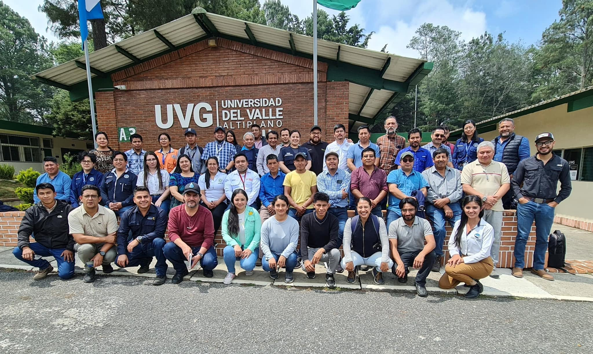
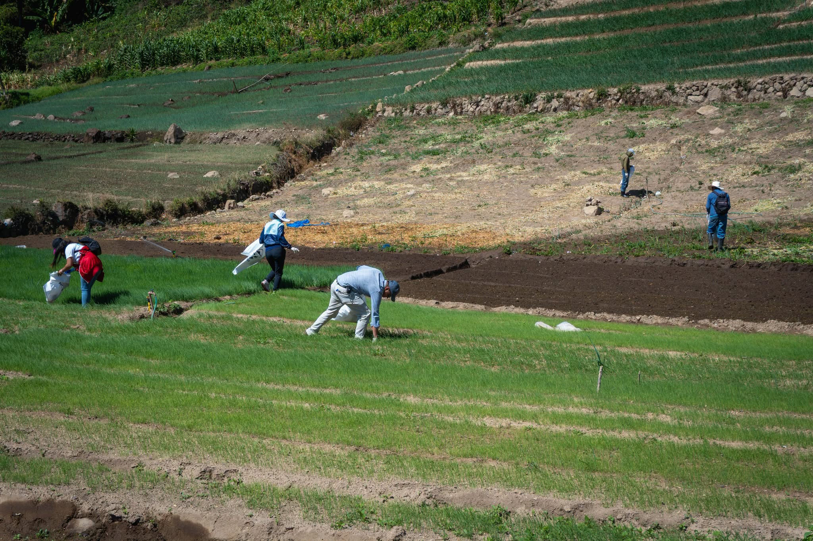
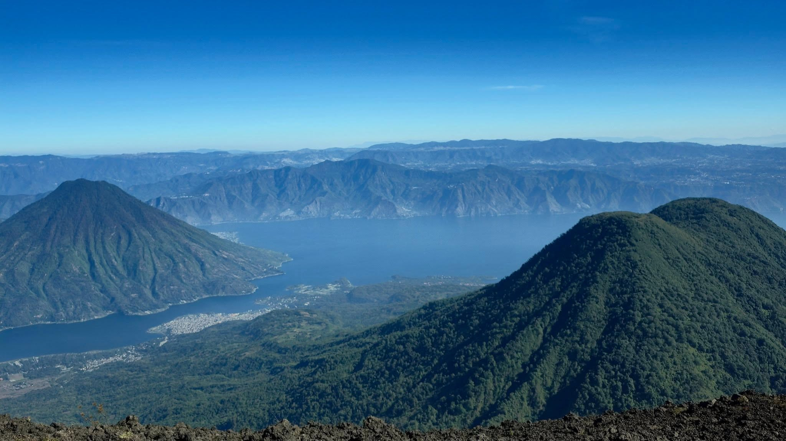
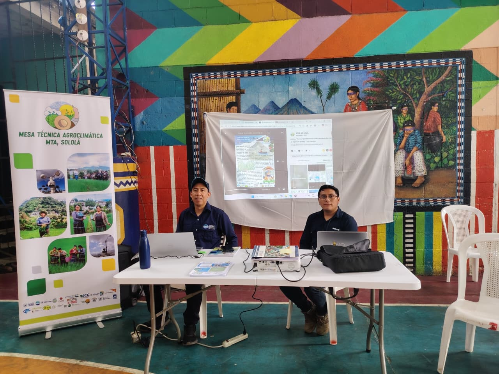
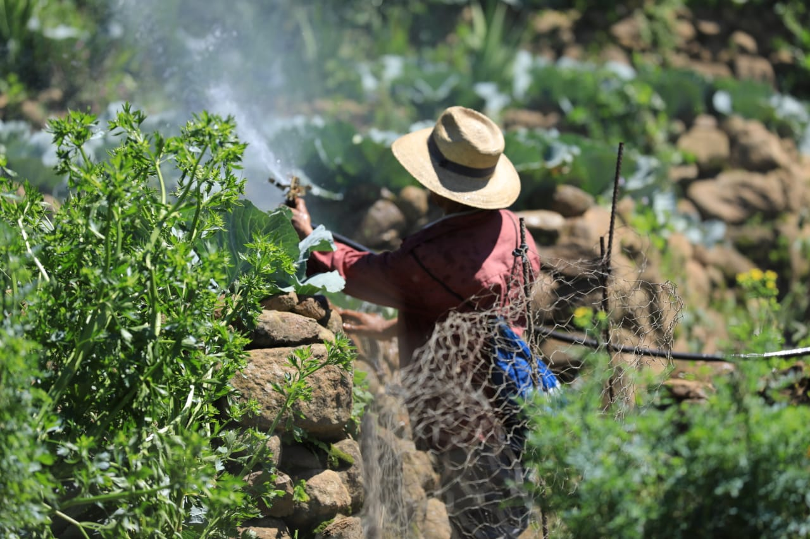

Último boletín disponible · DEFM 25–26
Boletín agroclimático de la MTA Sololá
Documento vigente disponible en el portal de la Mesa Técnica Agroclimática de Sololá. Puedes consultarlo en el navegador o descargar el PDF completo.
Agricultura · clima · territorio
Información climática y agroclimática traducida en herramientas claras para apoyar la prevención y la toma de decisiones del sector agropecuario en Sololá.

Datos del clima que se convierten en decisiones para el territorio.
La MTA reúne información meteorológica, conocimiento local y análisis técnico para comunicar escenarios climáticos, anticipar riesgos y orientar acciones en la producción agropecuaria.
Contenido principal
Consulta orientaciones para el período vigente, elaboradas a partir de las condiciones climáticas y agroclimáticas analizadas por la Mesa Técnica Agroclimática de Sololá. Este espacio quedará preparado para mostrar primero las recomendaciones del boletín más reciente.

Boletín agroclimático
Consulta el boletín más reciente. El carrusel queda preparado para incorporar nuevos documentos conforme sean publicados.
Perspectiva climática
Recorre las perspectivas y boletines climáticos oficiales. Pasa el cursor sobre cada portada —o tócala y enfócala en móvil— para ver una lectura rápida orientada a Sololá antes de abrir el documento completo.
La vista rápida toma como referencia principalmente las señales de Occidente y Altiplano Central. Por la topografía de Sololá, algunos sectores del sur pueden presentar transición hacia Bocacosta; por eso el resumen es orientativo y no sustituye el documento oficial.
Vista rápida para Sololá
En Sololá, la señal regional apunta a un mes seco y frío: Occidente y Altiplano Central presentan acumulados bajos, con influencia de frentes fríos y descensos de temperatura.
Referencia territorial: Occidente y Altiplano Central.
Fuente: INSIVUMEH
Información climática
El portal mantiene los módulos existentes y los organiza como recursos directos para consultar variables, estaciones, mapas y pronósticos.
Acceso general a precipitación, temperatura, viento y otros productos de consulta meteorológica.
Explorar clima 02Observaciones, fuentes meteorológicas y series disponibles. El módulo de estaciones se ampliará conforme existan nuevos datos.
Consultar datos 03Espacio para integrar mapas territoriales de apoyo y los mapas utilizados en productos y boletines de la MTA.
Ver recursos 04Balance hídrico, variables de suelo y atmósfera y herramientas para interpretar condiciones de estrés agroclimático.
Consultar agroclimaQué es la MTA



La Mesa Técnica Agroclimática de Sololá es un espacio de coordinación interinstitucional para analizar información climática, generar información agroclimática preventiva y apoyar la toma de decisiones en la producción agropecuaria. Integra fuentes técnicas y conocimiento territorial para producir recomendaciones, productos de síntesis y herramientas de consulta.